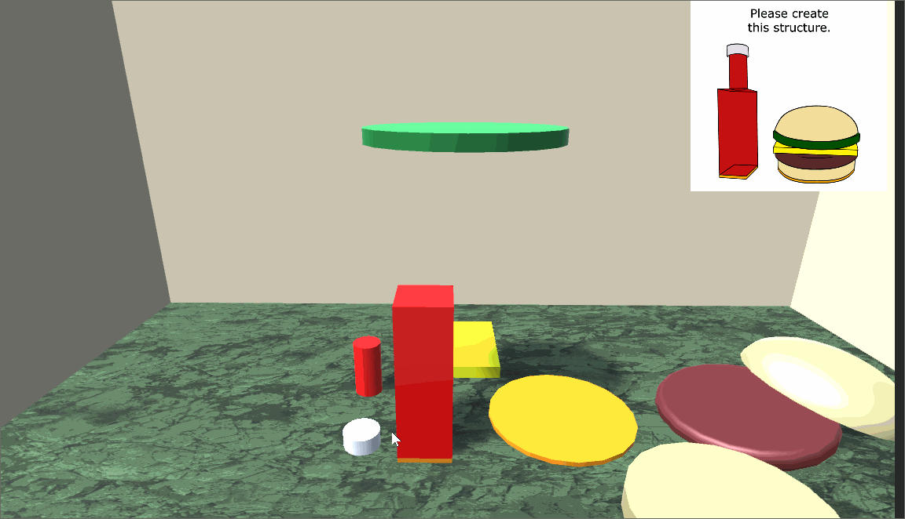

Getting Started
To enable the framework in Unity, simply add a GameLoop component to one of
the assets in your scene hierarchy.
GameLoop Arguments
The GameLoop takes the following arguments.
- Game Config File (Mandatory): Input text file containing the sequence of behaviors that implements your game.
- interactableLayerMask (Optional): Layer for selecting and dragging interactable objects. (Default Value: 8)
- DebugOptions (Optional)
- tree: Display the state of the behavior tree while the game is running
- selection: Display debug information for selecting and dragging objects.
- LogOptions
- enabled: Toggle whether logging is enabled
- verbose: Toggle whether log text should be printed to console as well as saved to file baseName: Set the filename for the log. The name format is "Application.persistentDataPath/baseName-timestamp.txt"
Tutorials
- Squirrel House: 2D interaction, animation, and sound
- Animated Star: 2D procedural animation
- One Block: Simple 3D interaction
- Block Puzzle: 3D interaction with custom behavior
Squirrel House
This demo shows how to trigger sounds and animation based on dragging and dropping objects.
From BasicExample/Assets/Scene, open SquirrelHouse.unity.
This is a 2D demo. All assets are stored under the HUD object which is configured with a canvas object.
The scene was created from the basic 3D scene. All game elements are stored under HUD.
- For music, we show and hide the object
Musicwhich is configured with an AudioSource component. - For the dance animation, we add an animation component to
SquirrelandSquirrelDanceto it. We make sure to configure the animation so it does not play automatically. - Drag and drop is configured using
Anchorobjects. TheAnchorunder theBoomBoxasset indicates where the casette should snap when the user lets go of it. Otherwise, the casette will remain at the position where the user let go. TheAnchoris offset slightly in the Z direction so that the colliders for the casette and BoomBox do not overlap (which would interfere with the raycast selection). - All other objects are simple images and text.
Here is the behavior script.
Fade: Message, 0, 1, 2.0
Repeat:
IfPickup: Casette
Hide: Music
StopAnimation: Squirrel, SquirrelDance
End
IfDrop: Casette, BoomBox
PlayAnimation: Squirrel, SquirrelDance
Show: Music
End
End
The root node of the behavior tree is always a sequence node, meaning the following script runs the
Fade behavior followed by the Repeat behavior.
Notes:
Fadechanges the alpha, or transparency, for an asset. The syntax isFade: <AssetName>, <StartAlpha>, <EndAlpha>, <Duration>Repeatrepeats the IfDrag and IfDrop conditionals forever.IfPickuptriggers if the user picks up the casette asset. When true, the two sub-behaviors are executed in parallel (e.g. simultaneously)IfDroptriggers if the user drops the casette on top of the BoomBox. When true, the two sub-behaviors are executed in parallel (e.g. simultaneously)PlayAnimationplays theSquirrelDanceanimation on theSquirrelasset.
Animated Star
This demo shows how to animate assets from a script.
From BasicExample/Assets/Scene, open AnimatedStar.unity.
The framework contains commands for moving, rotating, resizing, fading, and changing the colors of assets. The configuration of the scene is very simple. For example, the following script shows a messages, increases the size of the Star asset, then changes its color, and then moves it around the screen.
# Test built-in animators
SetText: Message, Start Demo
Fade: Panel, 0, 1, 2.0
Grow: Star, 0.1, 1.0, 1.0
SetText: Message, Demo
ChangeColor: Star, #FF00FFFF, 1.0
ChangeColor: Star, #00FFFFFF, 1.0
RevertColor: Star, 2.0
Move: Star, Waypoint1, Waypoint2, 2.0
Move: Star, Waypoint2, Waypoint3, 2.0, Cosine
Move: Star, Waypoint3, Waypoint1, 3.0, EaseIn
Pulse: Star, 2
SetText: Message, Demo Complete
Fade: Panel, 1, 0, 2.0
Notes:
- To move and rotate objects, set waypoints (e.g. empty game objects) with the desired starting and end states. Both the position and rotations of the waypoints will be used for animation.
- Colors should be RGB coordinates, each component in the range 0 and 1.
SetTextchanges the text on theMessageasset.Fadechanges the alpha, or transparency, for an asset. The syntax isFade: <AssetName>, <StartAlpha>, <EndAlpha>, <Duration>Growchanges the size uniformly for an asset. The syntax isGrow: <AssetName>, <StartSize>, <EndSize>, <Duration>ChangeColorchanges the color for an asset and all its children. The syntax isChangeColor: <AssetName>, <RGBA>, <Duration>. The original colors of the asset are cached so they can be restored later.RevertColorrestores the color of an asset. The syntax isRevertColor: <AssetName>, <Duration>Movetranslates and rotates an asset. The syntax isMove: <AssetName>, <StartTransform>, <EndTransform>, <Duration>, <Interpolation Type>. The interpolation type is optional. By default, we use linear interpolation. The start and end configuration of the movement is specified using Transforms in the scene. Above, we defined the transformsWaypoint1,Waypoint2, andWaypoint3.Pulsequickly pulses the size of the asset. The syntax isPulse: <AssetName>, <NumPulses>. It is also possible to set the speed and size of the pulse by passing these arguments as additional values, e.g.Pulse: <AssetName>, <NumPulses>, <PulseSpeed>, <PulseSize>. The default pulse speed is 0.4 seconds. The pulse size is a percentage of the original size and is currently 0.1, or ten percent.
One Block

This demo shows how to configure a 3D scene with drag and drop objects.
From BasicExample/Assets/Scene, open OneBlock.unity.
The user feedback is configured using events that correspond to the
If statements in the script. For example,
InitDraggable: Block
InitLocation: PlatformBlock
Repeat:
# Highlight the block asset yellow
# when the user hovers over it with the mouse
IfEnter: Block
ChangeColor: Block, #f0f00020, 0.1
SetText: Debug, SELECT BLOCK
End
# Revert the color when the mouse is not over the block
IfExit: Block
RevertColor: Block, 0.1
SetText: Debug, CLEAR BLOCK
End
# Color the platform transparent green when
# the user drags the block over it
IfDragEnter: Block, PlatformBlock
ChangeColor: PlatformBlock, #00FF0020, 0.1
SetText: Debug, ENTER DRAG
End
# Revert the color
IfDragExit: Block, PlatformBlock
RevertColor: PlatformBlock, 0.1
SetText: Debug, EXIT DRAG
End
# Play sounds on pickup and drop
IfDrop: Block, PlatformBlock
PlaySound: AnchorSound
End
IfPickup: Block
PlaySound: MoveSound
End
End
Notes:
InitDraggableinitializes an object so a player can pick it up and drag itInitLocationinitializes an object that can have an item dropped on top of it. You can configure where an object snaps using an Anchor transform that is a child transform of the object. For example, in this demo, thePlatformobject has a child transform, namedAnchor, that is offset by (0,1,0)IfEnterandIfExittrigger when the player's mouse is over the objectIfDragEnterandIfDragExittrigger when a dragged object is over a location where it can be dropped.IfPickupandIfDroptrigger when the player picks up, or drops, an object
Block Puzzle
This demo shows how to implement a 3D drag and drop puzzle with
more objects. From BasicExample/Assets/Scene, open BlockPuzzle.unity.
To get started, you only need to define the locations of Anchor points in the scene and then tell the framework which objects can be dragged and which objects can have others attached to them. For example, the following script initializes objects for the block puzzle.
InitDraggable: Cheese
InitDraggable: Patty
InitDraggable: BunTop
InitDraggable: Lettuce
InitDraggable: BunBottom
InitDraggable: Cap
InitDraggable: BottleTop
InitDraggable: BottleBottom
InitLocation: PlatformBurger
InitLocation: BunBottom
InitLocation: Patty
InitLocation: Cheese
InitLocation: Lettuce
InitLocation: PlatformBottle
InitLocation: BottleBottom
InitLocation: BottleTop
Using this script, the player can move objects and connect them together. However, there is no feedback.

To add feedback, we could add rules that trigger when the user interacts with objects in the scene. However, this is tedious and we can automatically setup feedback using a custom behavior. For example, the following behavior monitors when events happen on every interactable object in the scene. When an event happens, we play sounds and change colors.
public class HighlightBehavior : Behavior
{
AudioSource m_ssound;
AudioSource m_lsound;
Color m_scolor;
Color m_lcolor;
public HighlightBehavior(World w, Color sc, AudioSource ssound,
Color lc, AudioSource lsound) : base(w)
{
m_ssound = ssound;
m_lsound = lsound;
m_scolor = sc;
m_lcolor = lc;
}
public override void Setup()
{
foreach (Interactable i in world.GetInteractables())
{
i.AddPickupCb(OnPickup);
i.AddDropCb(OnDrop);
i.AddHoverEnterCb(OnEnter);
i.AddHoverExitCb(OnExit);
i.AddDragEnterCb(OnDragEnter);
i.AddDragExitCb(OnDragExit);
}
}
void OnEnter(Interactable source)
{
world.Run(
ProceduralAnimator.ChangeColor(source.transform, m_scolor, 0.03f)
);
}
void OnExit(Interactable source)
{
world.Run(
ProceduralAnimator.RevertColor(source.transform, 0.03f)
);
}
void OnPickup(Interactable source)
{
m_ssound.time = 0;
m_ssound.PlayOneShot(m_ssound.clip);
}
void OnDragEnter(Interactable source, GameObject target)
{
world.Run(
ProceduralAnimator.ChangeColor(target.transform, m_lcolor, 0.3f)
);
}
void OnDragExit(Interactable source, GameObject target)
{
world.Run(
ProceduralAnimator.RevertColor(target.transform, 0.3f)
);
}
void OnDrop(Interactable source, GameObject target)
{
if (target != null)
{
m_lsound.time = 0;
m_lsound.PlayOneShot(m_lsound.clip);
}
}
}
To connect our new behavior with the script, we add a creator to Factory.
public static Behavior Highlight(World world, string args)
{
string[] tokens = args.Split(",", 4);
Color sc, lc;
ColorUtility.TryParseHtmlString(tokens[0].Trim(), out sc);
Transform sobj = world.Get(tokens[1].Trim());
AudioSource ssound = sobj.GetComponent<AudioSource>();
ColorUtility.TryParseHtmlString(tokens[2].Trim(), out lc);
AudioSource lsound = world.Get(tokens[3].Trim()).GetComponent<AudioSource>();
return new HighlightBehavior(world, sc, ssound, lc, lsound);
}
Important: Trim() is important for parsing and name lookups to work.
After adding our new behavior, we can add the Highlight behavior to our script.
InitDraggable: Cheese
InitDraggable: Patty
InitDraggable: BunTop
InitDraggable: Lettuce
InitDraggable: BunBottom
InitDraggable: Cap
InitDraggable: BottleTop
InitDraggable: BottleBottom
InitLocation: PlatformBurger
InitLocation: BunBottom
InitLocation: Patty
InitLocation: Cheese
InitLocation: Lettuce
InitLocation: PlatformBottle
InitLocation: BottleBottom
InitLocation: BottleTop
# Out NEW HIGHLIGHT is here!
Highlight: #FFFF00FF, MoveSound, #00FF00F0, AnchorSound